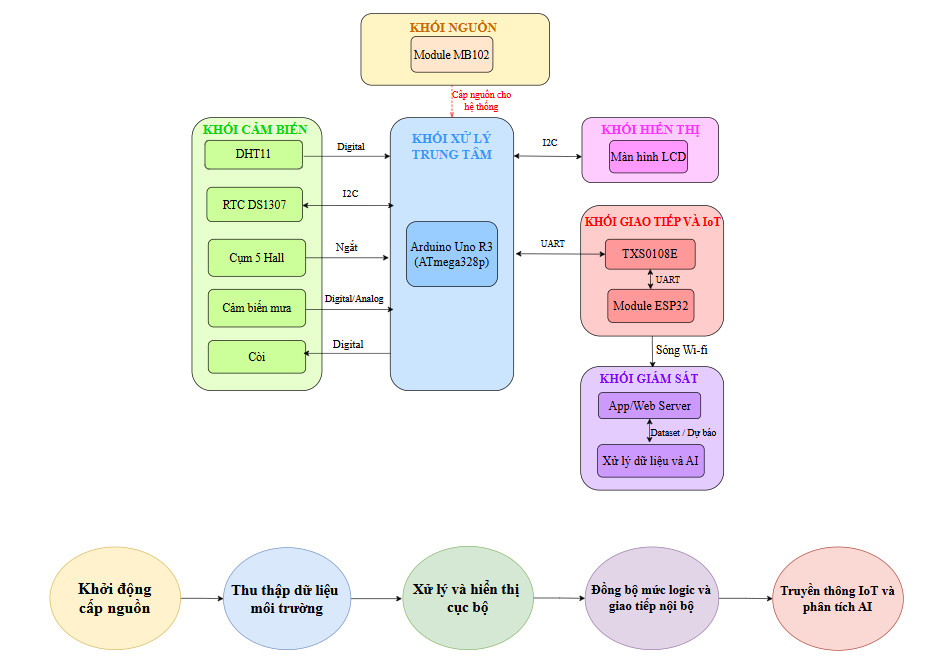
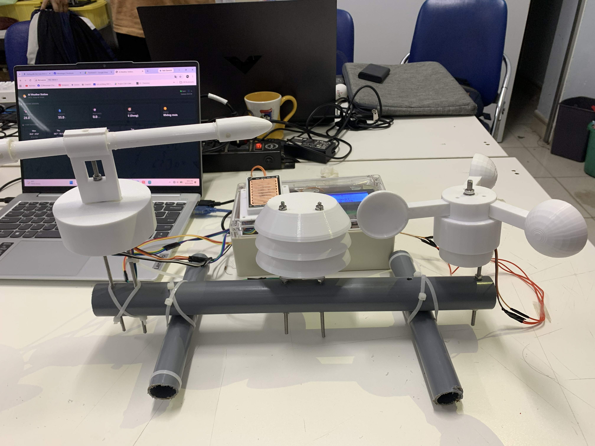

Phân tích hệ thống · Data Flow · Kiểm thử phần cứng
Trạm quan trắc thời tiết IoT tích hợp AI
Hệ thống thu thập dữ liệu môi trường và dự báo thời tiết. Trọng tâm công việc: kiểm tra tín hiệu giao tiếp ngoại vi, thiết kế sơ đồ kiến trúc và tổng hợp báo cáo kỹ thuật.
Dự án hướng tới việc xây dựng một hệ thống hoàn chỉnh từ biên đến đám mây, thực hiện thu thập dữ liệu môi trường thời gian thực và áp dụng mô hình Học máy để đưa ra các dự báo thời tiết cục bộ.

Trong quá trình thực hiện, tôi tập trung tìm hiểu cách các cảm biến cung cấp dữ liệu cho vi điều khiển, cách tổ chức các thành phần phần cứng và cách biểu diễn luồng dữ liệu giữa các khối chức năng. Việc kiểm tra dữ liệu đầu ra từ cảm biến giúp phát hiện sớm những vấn đề có thể phát sinh trước khi thực hiện các bước tích hợp tiếp theo.
Bên cạnh phần cứng, tôi tìm hiểu cách sử dụng công cụ phần mềm để hỗ trợ xử lý dữ liệu và mô tả kiến trúc tổng thể. Qua đó, dự án giúp tôi rèn luyện tư duy phân tích hệ thống, khả năng đọc hiểu luồng dữ liệu và cách trình bày các thành phần kỹ thuật trong một hệ thống IoT.
| Nền tảng | ATmega328P, ESP32 |
|---|---|
| Cảm biến | Hall, Cảm biến mưa, DHT11 |
| Phần mềm & AI | Python, Ridge Regression |
| Trọng tâm | Kiểm thử ngoại vi, Phân tích luồng dữ liệu |
| Tài liệu hóa | Sơ đồ khối hệ thống, Báo cáo kỹ thuật |
| Kết quả | Kiến trúc dữ liệu minh bạch, phần cứng tích hợp ổn định |

Chi tiết công việc
01 / THỰC THIChạy thử nghiệm thiết bị
Thiết lập và vận hành thử nghiệm độc lập từng module cảm biến để đánh giá dải đo, nhiễu tín hiệu và tính ổn định của thiết bị.
Kiểm tra giao tiếp ngoại vi
Xác thực các chuẩn giao tiếp (đặc biệt là I2C với cảm biến BME280), đảm bảo dữ liệu môi trường thô được đọc về vi điều khiển chính xác, không bị suy hao.
Phân tích luồng dữ liệu
Định tuyến cách dữ liệu di chuyển từ ATmega328P/ESP32 lên server và đi vào mô hình Python, đảm bảo không xảy ra tắc nghẽn luồng thông tin (bottlenecks).
Thiết kế kiến trúc & Báo cáo
Mô hình hóa toàn bộ hệ thống bằng sơ đồ khối trực quan, biên soạn báo cáo kỹ thuật chi tiết để nghiệm thu dự án và chuyển giao cho nhóm AI.
Kỹ năng đạt được
02 / KẾT QUẢ TỔNG QUANPhân tích Hệ thống
- Kỹ năng tư duy bao quát để nhìn nhận một hệ thống IoT dưới góc độ luồng dữ liệu thay vì chỉ là các linh kiện rời rạc.
- Thành thạo việc sử dụng các công cụ vẽ sơ đồ chuyên ngành để mô hình hóa kiến trúc dự án đa lớp.
Kỹ năng mềm & Kỹ thuật
- Kỹ năng làm tài liệu hóa - yếu tố quan trọng khi làm việc nhóm (phần cứng giao tiếp với phần mềm).
- Nắm bắt cách vận hành các cảm biến thông dụng và phương pháp xác thực dữ liệu ngoại vi trước khi tích hợp hệ thống lớn.